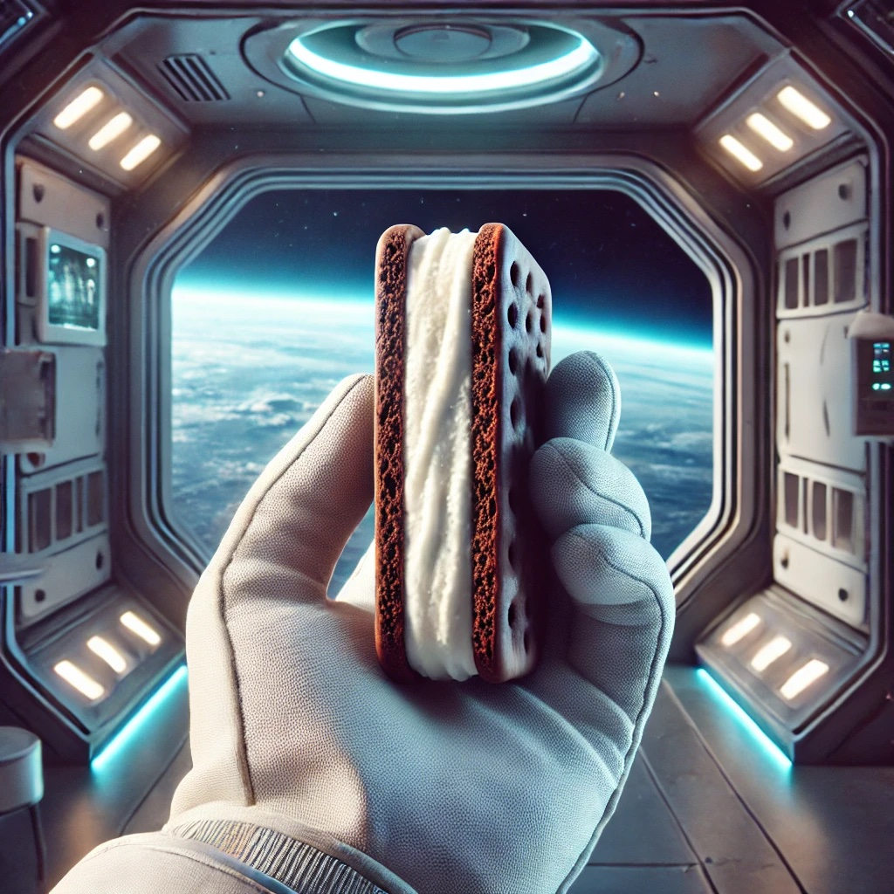

True Place Stories
From the Ice Age to the Space Age
Windover People · Titusville, FL
The Coin That Flips the Super Bowl
The Highland Mint · Melbourne, FL

The Ice Cream That Wanted to Go to Space
Kennedy Space Center, FL
General Tom Thumb
Middleborough, MA
Hi, I'm Bea! Tap any green lens on the map to explore a story from that place.